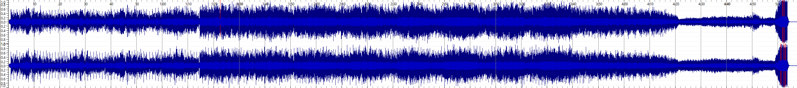
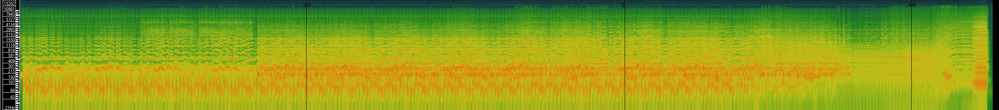
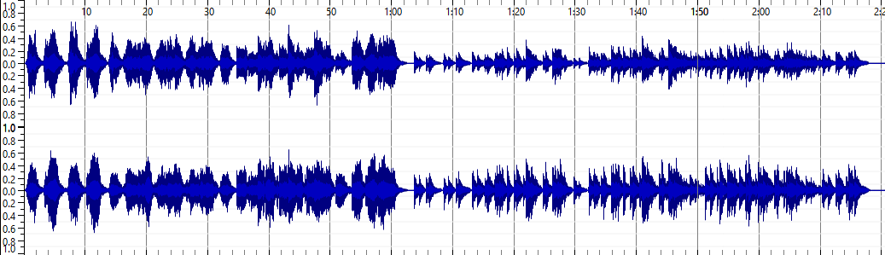
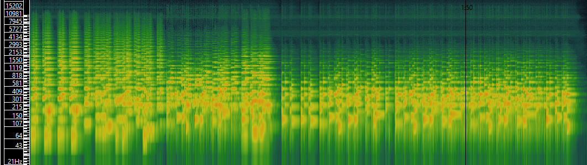
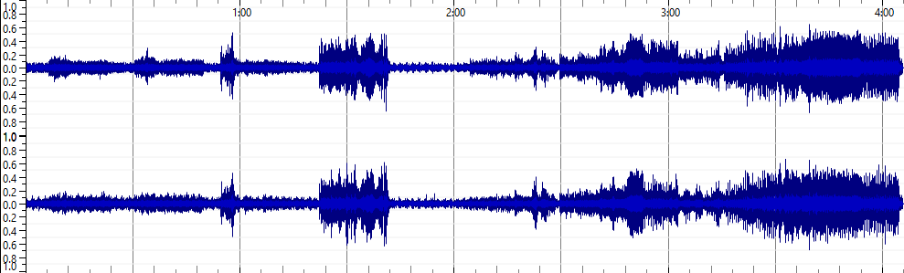
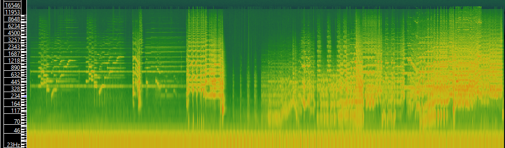

Week 8: Music as Sound
Below is a table that highlights three different tracks and the most relevant metadata associated with them.
| Track One | Track Two | Track Three | |
|---|---|---|---|
| Title | Dark Eyes | Once Upon A Time | The Sorcerers Apprentice |
| Artist | Teddy and Marge | Maarten Schellekens | Boston Symphony Orchestra |
| Composer | Teddy and Marge | Maarten Schellekens | Paul Dukas |
| Copyright Information | Attribution-NonCommercial-ShareAlike 3.0 United States (CC BY-NC-SA 3.0 US) | Attribution-NonCommercial 4.0 International (CC BY-NC 4.0) | Public Domain: Non-PD US |
| Genre | Old-time/Historic | Old-time/Historic | Classical |
| Source | Freemusic.org | Freemusic.org | IMSLP |
| File/Audio Format | MP3 | MP3 | MP3 |
| Number of Channels | 2 | 2 | 2 |
| Sample Rate | 44100Hz | 44100Hz | 48000Hz |
| Bit per Second | 192 kb/s | 256 kb/s | 320 kb/s |
| Bit per Sample | 32 | 32 | 32 |
| Duration | 05:07 | 02:30 | 10:30 |
I then had to create spectograms of these 3 tracks. Below are the waveforms and specrograms respectively.
Dark Eyes
 Once Upon A Time
 The Sorcerers Apprentice
 Analysis between spectograms and waveforms
One advantage of time-frequency analysis is that it allows for the an easier interpretation as to what is going on in the audio file. From the spectogram, we can see how the frequencies of the audio file shift throughout the piece, even allowing us to understand approxiamately what notes are being played. However the waveform analysis is not as informative, as all that is depicts clearly is the amplitude.